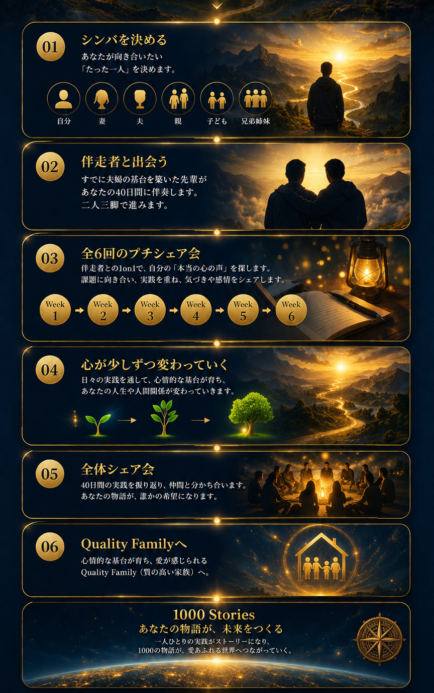

シンバPJは、忙しい毎日の中で見失いがちな「本当の心の声」と向き合い、大切な人との絆を育んでいくプロジェクトです。ストーリーに触れ、自らも実践を重ねることで心情的な基台を育み、愛が感じられる Quality Family を目指します。
シンバPJは、1000のストーリーを、みんなで紡いでいくプロジェクトです。
止まっていた心が動き出す。
生きている実感が戻り、大切な人とのつながりが深まっていくプロジェクト。
シンバPJは、忙しい毎日の中で見失いがちな「本当の心の声」と向き合い、大切な人との絆を育んでいくプロジェクトです。ストーリーに触れ、自らも実践を重ねることで心情的な基台を育み、愛が感じられる Quality Family を目指します。
シンバPJは、1000のストーリーを、みんなで紡いでいくプロジェクトです。
一人の実践が、
一つのストーリーになる。
一つのストーリーが、誰かの心を動かす。
その誰かの実践が、
また新しいストーリーを生み出していく。
1000の実話で、未来を変える。
一つ一つの物語が積み重なるとき、自分の心も、家族も、社会も、もっと愛を感じられる場所へと変わっていく。
そんな未来を、
一緒につくっていきませんか。
あなたの「心の声」が、
大切な人とのつながりを深め、未来を変えていく
